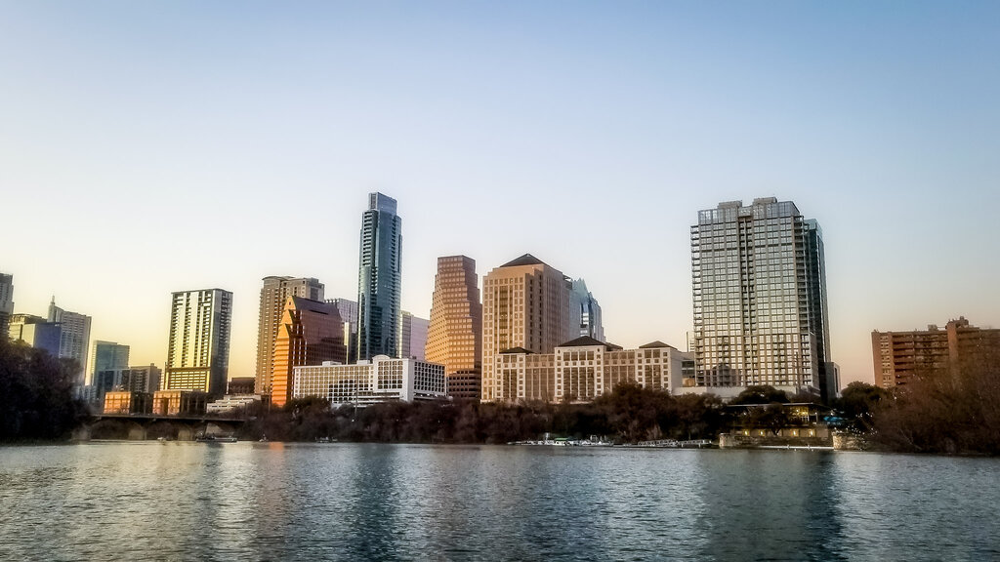

Overview
Site Name
Calabar Chamber of Commerce
Purpose
We are a nonprofit business organization that supports entrepreneurs, small and large businesses in Cross River State. Our mission is to promote economic growth, create networking opportunities, and preserve Calabar’s rich cultural heritage through business collaboration.
Audience
Our audience includes local business owners, aspiring entrepreneurs, investors, government agencies, tourists, and community leaders interested in driving sustainable development in the region.
Branding
Website Logo
Style Guide
Color Palette
Color Palette| Primary | Secondary | Accent 1 | Accent 2 | Accent 3 |
|---|---|---|---|---|
| #50d8d7 | #383336 | #293132 | #2e2f47 | #547AA5 |
Typography
Heading Font: Georgia
Paragraph Font: Verdana
Normal Paragraph Example
Our Chamber brings together businesses of all sizes to grow Calabar’s economy while preserving our cultural legacy.
Colored Paragraph Example
Celebrating local success stories and encouraging sustainable practices within the Nigerian business ecosystem.
Navigation Bar
Content
Home Page
Image for Home Page
Scenario Questions to Consider
Can I promote my business event through the Chamber?
Yes! All Chamber members are welcome to advertise their events – from product launches to trade fairs – via our website calendar, newsletters, and social media platforms.
Can I get information about doing business in Calabar?
Absolutely. Our site includes essential resources for business registration, local permits, trade policies, and investment opportunities in Cross River State.
Can the Chamber assist with resolving business conflicts?
While we don’t mediate directly, we offer support by connecting members with legal and governmental resources. We encourage professionalism among our members and take complaints seriously.
Can I access the Chamber’s member directory?
Yes. Members can access a digital directory of fellow businesses for networking purposes. Email and personal contact details are protected unless permission is granted.
Wireframes
Home Page
The homepage will feature cultural highlights, news updates, upcoming events, and membership information, all optimized for both desktop and mobile views.
Full View

Mobile View